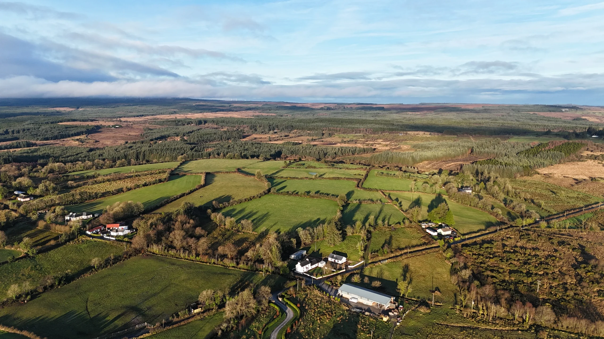
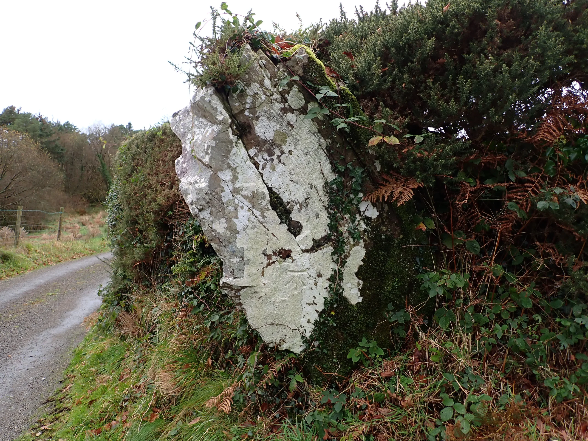
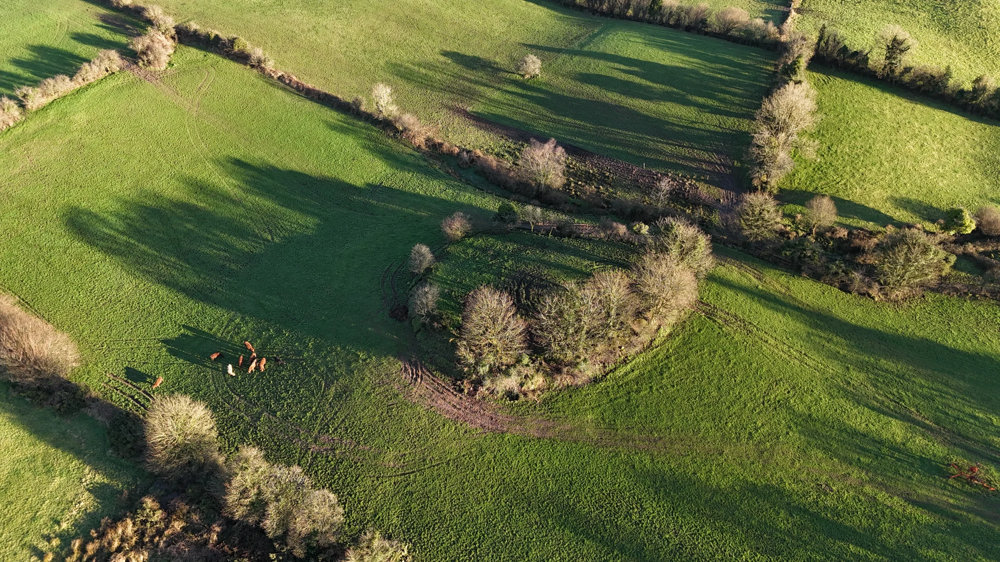

Laggoo
Laggoo in Irish “Leagúch” is 915.24 acres or 370.38 hectares in size and is in the Electoral division of Marblehill.



Laggoo borders Acres, Cloghvoley, Derreennamucka, Gorteenayanka, Loughatorick North and Moyglass.
Population
Map
Placenames
| Name | Type | Notes |
|---|---|---|
| The Furry Hill | hill or hills | |
| The Hill | field | |
| Moran’s | field | This goes all the way down to the stream and corresponds exactly to the size of plot 1A on the Griffith’s Valuation. |
| The Bog Road | country lane, boreen | |
| The Boreen | country lane, boreen | Pronounced “Boatcheen”. |
| The Little Meadow | field | |
| The Bog | bog | |
| The Far Field | field | |
| Bushpark | field | |
| The Far Field | field | |
| Hooban’s | field | |
| Riasc | field | |
| The Middle Field | field | |
| Riasc | field | |
| Children’s Burial Ground | graveyard, cemetary, burial ground | There is no visible trace of this burial ground any more. |
| The Near Field | field | |
| The Lawn | field | Also known as “Hooban’s”. |
| Mass Path | mass path | |
| Daly’s Field | field | |
| Riasc | field | |
| Gortaganna | field | |
| Gortwurry | field | |
| Riasc | field | Patricia Kennedy knew this as “Keane’s Paddock”. |
| The Well Field | field | |
| Lower Laggoo | sub-townland | |
| Cathair | field | |
| Bogpark | field | |
| The Hill Field | field | |
| Gortonry | field | Pronounced “Gurtonree”. |
| Conroy’s Field | field | |
| The Well Field | field | The field containing Tubbernasally well. |
| Hasty’s Hill | hill or hills | |
| Tubbernasally | well | |
| The Long Field | field | This was a long field visible on the 1995 aerial map. |
| Cnocaide Mór | hill or hills | We heard the pronunciations “Cnuckaja More”, “Nuckaja More”, and “Knockinchy More” for this. |
| Leacáinte Hill | hill or hills | Patricia Kennedy knew it as Conroy’s Hill. |
| Boreen Whyte | road | Boreen pronounced “Boatcheen”. |
| The Fort Field | field | |
| Phúicaise | sub-townland | Pronounced “Foocasha”. Not 100% sure of the location but remembers hearing that Paddy Murray’s house was in “Phúcaise”. This is possibly the place John O’Donovan was referring to here: http://places.webworld.org/place/47364. |
| Upper Laggoo | sub-townland | |
| Mahony’s Field/The Hurling Field | field | |
| The Bull Field | field | |
| Gráinne’s | field | |
| Hickey’s | field | This belonged to Hickey’s from Loughatorick. There was a garden here with plum trees. |
| The Well Field | field | |
| Mires | marsh | These 7 wet fields (approx.) are known as Mires. |
| The Big Stone | rock or rocks | There’s a benchmark on this stone. |
| The River Field | field | |
| The New Garden | field | |
| The Thurs | field | |
| Sean’s Garden | field | |
| The Park | field | |
| The Park | field | |
| Acres Bog | bog |
Houses
| Name | Notes |
|---|---|
| Conroy’s House | |
| Edward Duggan’s House | |
| Moran’s House | Some of these Morans went to America. |
| Keane’s House | Patrick Keane moved from Drimkeary to here to move in with his grand-aunt Anne Duggan (Melia). Patrick married Catherine Costelloe from Atyperish. This house was knocked and a new house built in it’s place. |
| Hooban’s House | |
| Whitely’s House | |
| Mahony’s House | This house is now a shed. |
| Daly’s House | Tony said that the house to North of this in plot 4 was Daly’s. I’ve moved it to plot 6A because this was held by Michael Daly on the Griffith’s Valuation although only for land. This should be checked again. |
| Murphy’s House | |
| Cleary’s House | |
| Duggan’s House | The new house beside this was built by Jim Duggan. |
| Conroy’s House | Lawrence Mahony from 2B is the proprieter of land here on the Griffith’s Valuation. This house is now a shed. |
| Kenny’s House | |
| Madden’s House | The Madden’s moved from this house to the other house in 17B to the south-east. |
| Tuohy’s House | |
| Larry Martin’s House | |
| Bridget Madden’s House | |
| Halloran’s House | |
| Paddy Murray’s House | |
| Murray’s House | |
| Donnellan’s House | |
| Connaire’s House | This is where Connaire’s (still in Laggoo but in another house) came from. They were not in this house at the time of the census. |
| Spain’s House | Martin Spain married Sarah Connaire on 12/07/1904. |
| Mahony’s House | This house was uninhabited at the time of the 1901/1911 census. |
| Dervan’s House | Catherine Fahy may have lived in the house to the north of this on the 6″ map. This house is not recorded on the 1911 census. This is where Bernard Dervans family of Dervan’s Shop in Loughrea came from. |
| Murray’s House | |
| Johnny Duggan’s House | |
| Murray’s House | Known as “Shoe Michael”. |
Buildings
| Name | Notes |
|---|---|
| Larry Martin’s Workshop | Larry Martin was a carpenter. |
| Cobbler’s Workshop | |
| Cleary’s Shop | |
| Murray’s Shop |